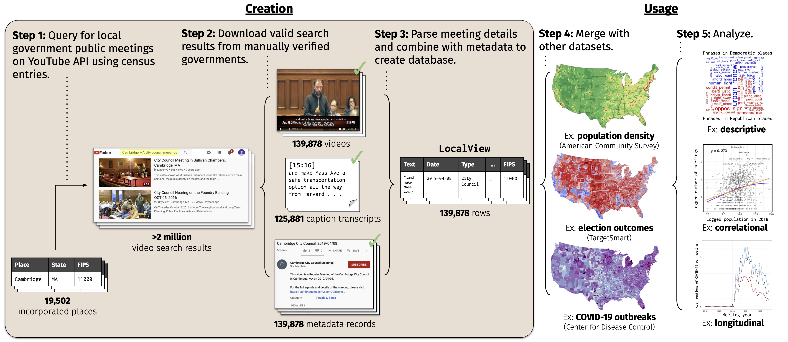

Data science tools to study local policy-making
LocalView is an open-source data portal built by Soubhik Barari and Tyler Simko to advance the study of local government in the United States.
LocalView is the largest known database of local government public meetings as they are captured and uploaded online.
LocalView is continuously collected, processed, and publicly available through an automated pipeline described below.
